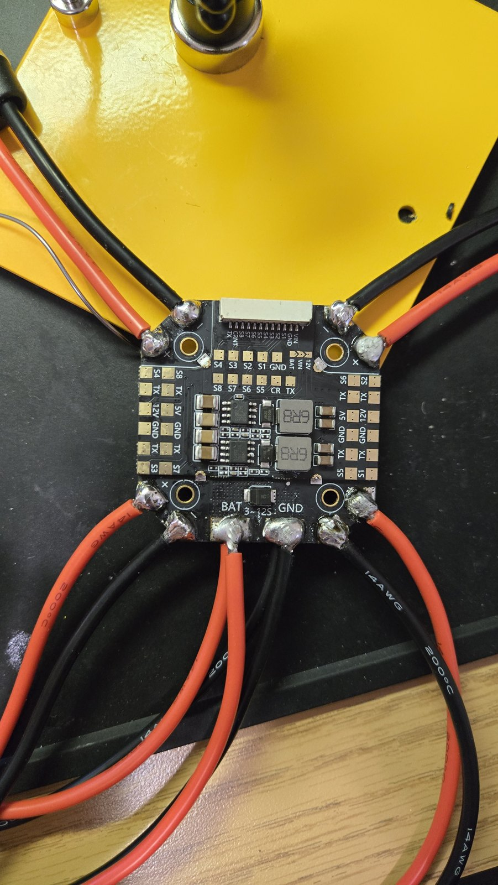
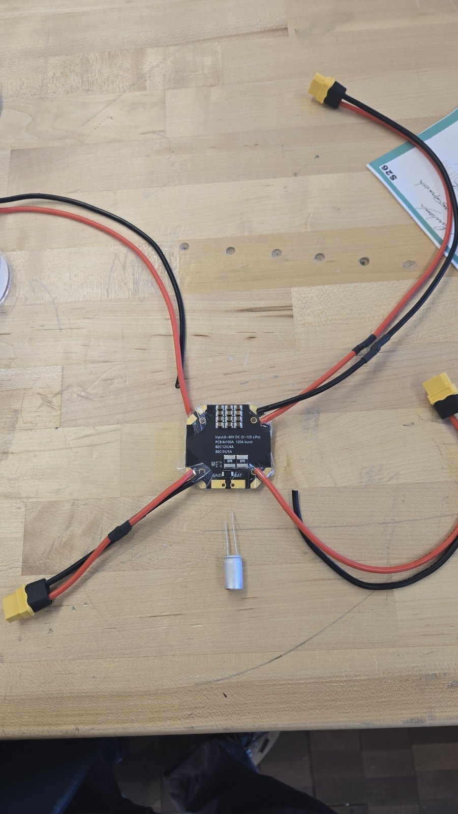
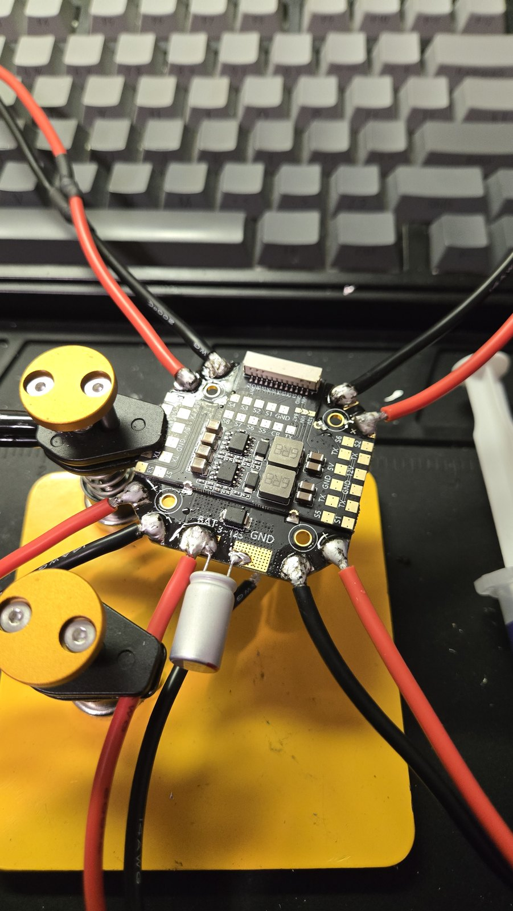
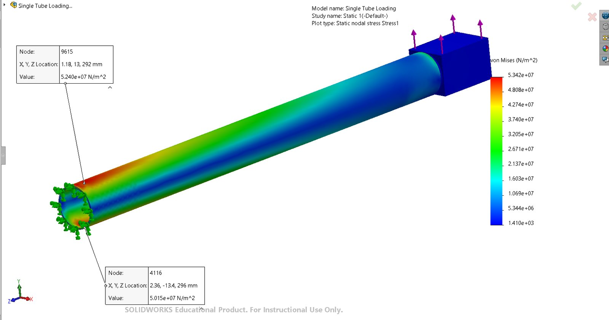
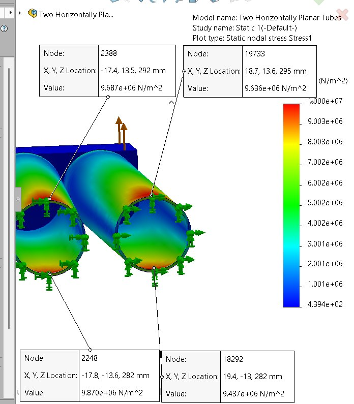
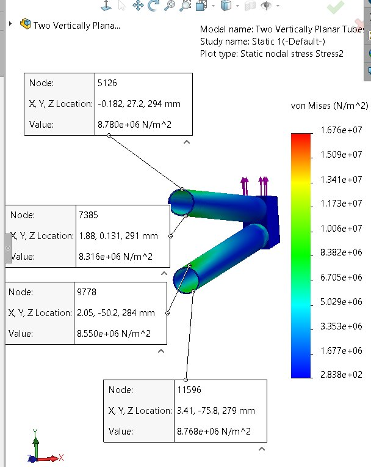
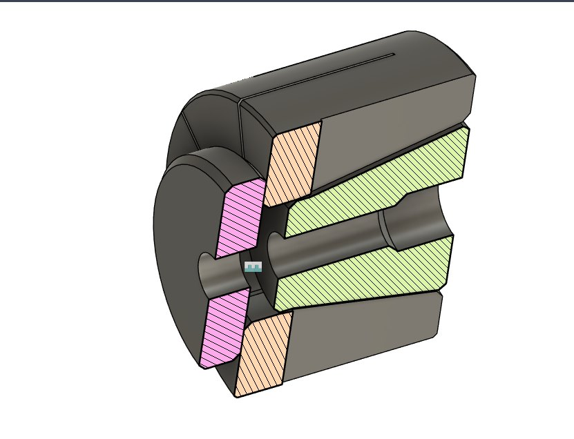
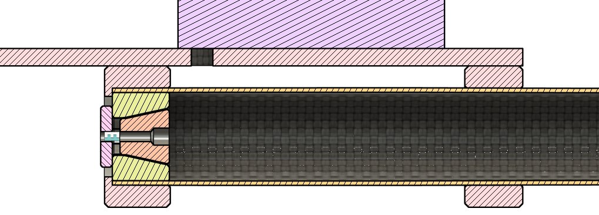
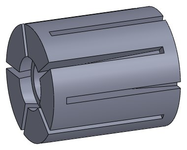
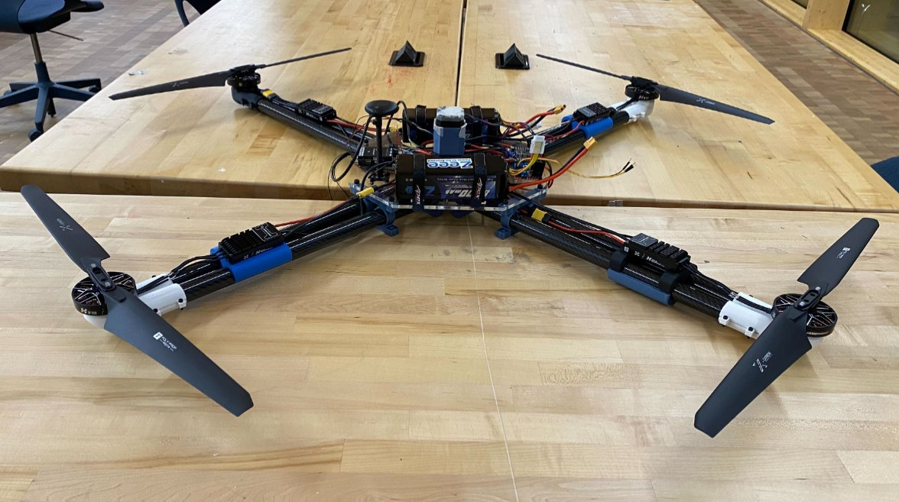

Heavy Lift Drone
Electrical subsystem lead on a multirotor rated to lift 30 lb: power distribution, harnessing, motor control, and a lighter arm coupling.
I led the electrical subsystem of a heavy lift multirotor: the power distribution board, the hand built harness, and motor control. I also redesigned the coupling that joins the carbon fiber arm tubes, cutting it from 10 parts to 6 and its weight by 14%. In April 2026 the drone flew with a payload in the test cage.
Sheet 2 of 5
Power distribution and harness
Every ESC draws from a central power distribution board. I laid the harness out on the bench at full length, fabricated the cables and connectors, and checked the system on the bench before it went on the airframe.






Sheet 3 of 5
Arm structure
The arms are carbon fiber tubes. Before settling the layout I compared a single tube arm against paired tubes stacked horizontally and vertically in SolidWorks Simulation, loading the motor end and probing von Mises stress at the root.






Sheet 4 of 5
Coupling redesign
The original coupling for the carbon fiber arm tubes used 10 components. I replaced it with a slotted collet clamp, bringing it down to 6 components and cutting its weight by 14%.
The collet was pull tested on an arm tube with a force gauge before going on the airframe.






Sheet 5 of 5
Flight testing
Parts were load checked on the bench with a force gauge before flight. In April 2026 the drone lifted a crate payload and hovered inside the netted test cage.


Files
Built with the ASME Design Team at Penn State.